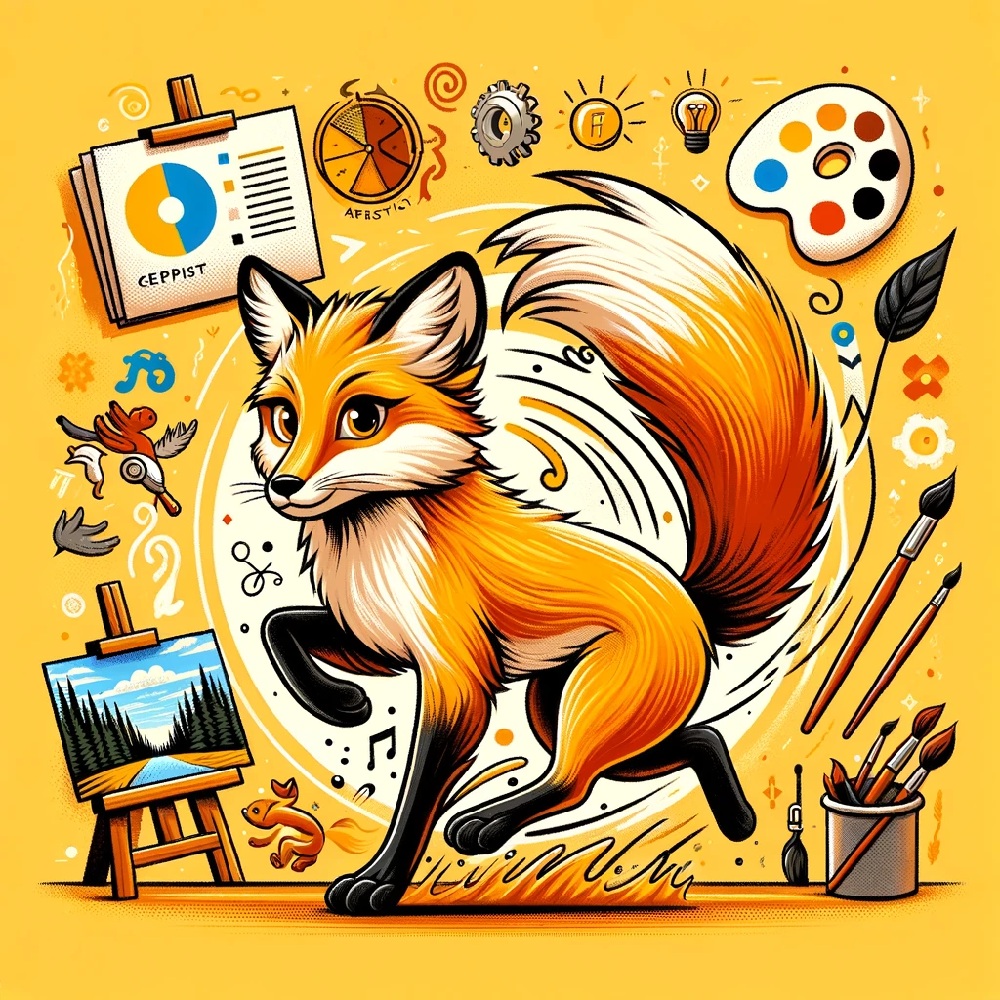

비버
협력과 체계의 대표
비버는 협력적이고 체계적인 동물로 알려져 있습니다.
비버는 복잡한 프로젝트를 계획하고 실행하는 데 뛰어난 능력을 발휘하며,
이는 그들이 체계적이고 계획적인 접근을 통해 이루어집니다.
이들은 팀원들과 협력하여 목표를 달성하고, 이를 통해 공동의 성공을 이루어냅니다.
비버는 집단의 안녕과 안전을 위해 끊임없이 노력하며, 조직 내에서 중요한 역할을 맡고 있습니다.
또한, 비버는 위기 상황에서도 침착하게 대처하여 집단을 안정적으로 이끌 수 있는 능력을 가지고 있습니다. 이들의 체계적이고 협력적인 성향은 집단의 번영과 조화로운 생활에 큰 기여를 합니다.
장점
• 협동심 : 팀워크를 통해 복잡한 프로젝트를 계획하고 성공적으로 수행합니다.
이들은 협력하여 공동의 목표를 달성하는 데 능숙하며, 팀원들과의 조화로운 관계를 유지합니다.
• 체계적 : 비버는 체계적이고 계획적인 접근을 통해 댐과 집을 건설하듯이
이들의 체계적인 행동은 안정적이고 예측 가능한 환경을 만듭니다.
이를 통해 집단의 경험을 효율적으로 활용할 수 있습니다.
• 책임감 : 비버는 가족과 집단의 안녕을 위해 책임감 있게 행동합니다.
이들은 자신의 역할을 충실히 수행하며, 집단의 안전과 번영을 위해 노력합니다.
단점
• 변화에 대한 저항 : 비버는 체계적이고 예측 가능한 환경을 선호하기 때문에,
갑작스러운 변화나 예기치 않은 상황에 적응하는 데 어려움을 겪을 수 있습니다.
• 과도한 보호 본능 : ESFJ는 가족과 조직을 과도하게 보호하려는 경향이 있어,
때로는 다른 사람들과의 갈등을 초래할 수 있습니다.
• 궁합이 좋은 동물은?


코끼리 & 골든리트리버
골든 리트리버는 친절하고 보호적인 성격을 가지고 있어, 비버와 잘 어울립니다.
두 동물 모두 협력적이며, 집단의 안녕을 중시합니다.
코끼리도 책임감이 강하고 체계적인 성향을 가지고 있어, 비버와 조화를 이룹니다.
코끼리의 안정적이고 차분한 성격은 비버의 체계적인 생활 방식을 지원할 수 있습니다.
• 궁합이 안맞는 동물은?

여우
여우는 기민하고 자유로운 성향을 가지고 있어, 비버의 체계적이고 조직적인 성격과 상충될 수 있습니다.
여우의 변덕스러운 행동과 독립적인 성향은 비버가 선호하는 안정적이고 예측 가능한 환경을 방해방해할 수 있습니다.